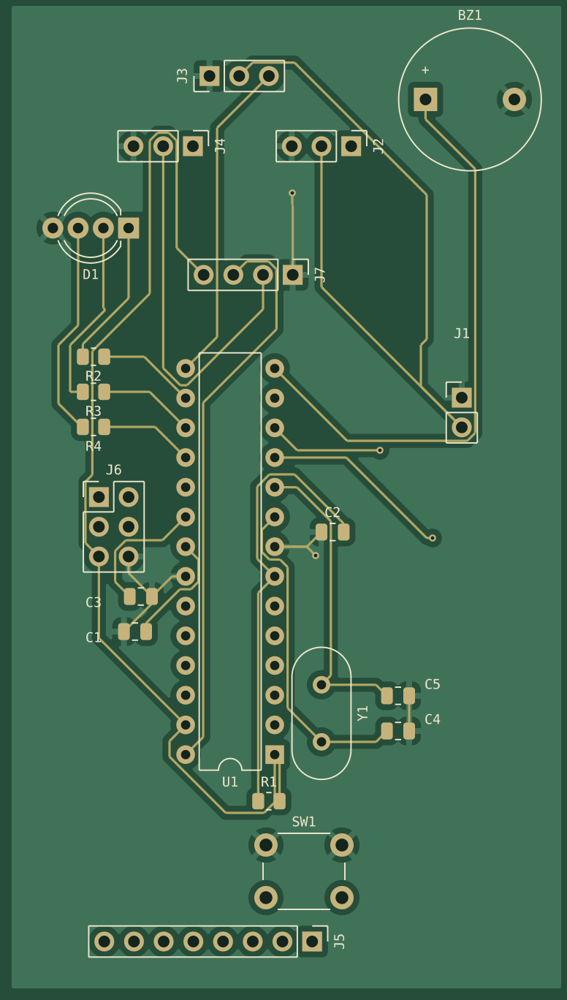
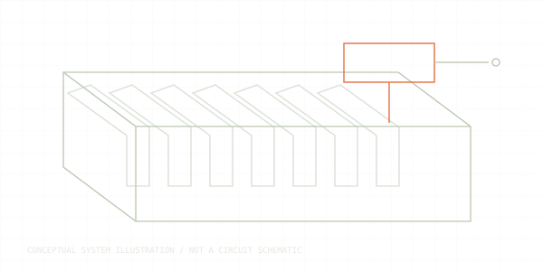
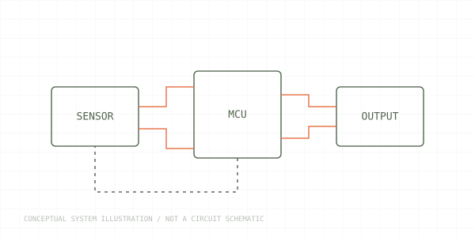
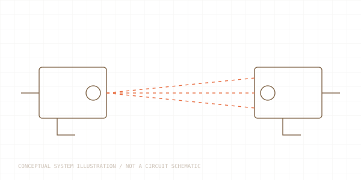
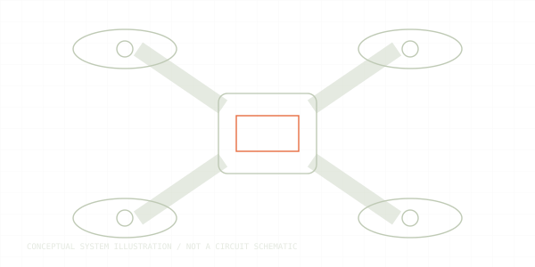
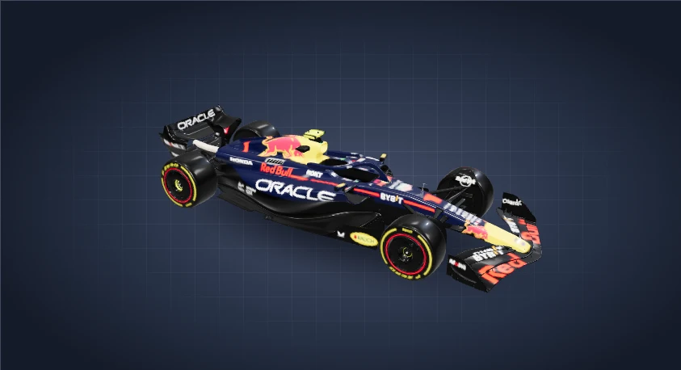

BU F1 Club
Founder & President
Building a motorsport community and leading the design and integration of a racing simulator.ELECTRICAL ENGINEERING · BOSTON UNIVERSITY
I build things where
circuits meet code.
Embedded systems, electric race cars, and the occasional idea that takes over my desk.

DRAG TO ROTATE · SELECT A COMPONENTA receiver connection, not an onboard sensor. Explore the actual components and their connected traces.
Open schematic ↗Real layout · KiCad library models · D1 LED simplified01 / SELECTED WORK
Systems I’ve built, problems I’ve worked through,
and a few things still taking shape.

Orion BMS2 · CANbus · DTITERRIER MOTORSPORT
Accumulator monitoring, CAN diagnostics, and vehicle integration with Terrier Motorsport.

STM32 · ESP32 · CAN · PCBEMBEDDED SYSTEMS
A dual-controller CAN watchdog, from prototype to a custom PCB.

PCB design · Hardware integrationHARDWARE / COMMUNICATIONS
Transmitter and receiver PCBs, designed, built, and tested as one system.
 ESP-IDF · RTOS · I²C · Node.js
ESP-IDF · RTOS · I²C · Node.jsEMBEDDED / ROBOTICS
An evolving ESP32 workspace for real-time tasks, telemetry, and robotic navigation.

LDARC F411 · Betaflight · FabricationPROTOTYPING / FLIGHT
A custom racing drone, flight electronics, and experiments in chassis materials.
 Raspberry Pi · TCP/IP · RTOS concepts
Raspberry Pi · TCP/IP · RTOS conceptsSENSING / INTERFACES
Vehicle sensing with Raspberry Pi and a live temperature-and-distance interface.
Showing 6 projects
A SMALL DETOUR / SIGNAL LAB
Write a function. Follow a signal.
No lab coat required.
Try x^2, sin(x), exp(-x^2), or sin(x-t).
Use * for multiplication; f follows the dial.
02 / THE PERSON AT THE BENCH
I’m an Electrical Engineering student at Boston University, concentrating in Robotics, and graduating in 2028.
I work across the boundaries between circuits, firmware, and physical systems. At Terrier Motorsport, that means accumulator electronics, CAN communication, and the work of getting subsystems to talk to each other.
I also enjoy helping other people build. Through BU’s summer programs, I’ve taught circuits, sensors, Arduino, programming, and debugging—and guided more than 200 students toward working prototypes.
The full story, on one page ↗STM32 · ESP32 · Arduino · Raspberry Pi · CANbus · Orion BMS2 · Altium · KiCad · Soldering
C/C++ · Python · MATLAB · Verilog · JavaScript · Git · Linux · MERN stack
Onshape · 3D modeling & printing · Laser cutting · Waterjet cutting
Founder & President
Building a motorsport community and leading the design and integration of a racing simulator.Deputy Lead, Embedded Systems
Vehicle electronics, accumulator monitoring, CAN integration, and a custom AMS in development.Co-Director, BU High School Hacks
Co-led the spring 2026 hackathon for 150+ high school students.Summer Program Instructor
Introductory electrical engineering, prototyping, programming, and debugging.Vice President of Technology
Mentoring architecture, smart contracts, APIs, and rapid prototyping.Summer Intern
Co-designed a microcontroller-based vital-sign monitor and wrote its firmware.OFF THE BENCH / FORMULA 1
I’m a Red Bull Racing fan. This is the car I’d put on my desk if I had room for one more thing.
3D model by Redgrund on Sketchfab. Adapted for the web under CC BY 4.0.
03 / THE OPEN NOTEBOOK
The daily things: a thought, a photograph,
a build, or something worth remembering.
A separate little space for writing about life around the workbench. The earlier chapters live there, too.
Open the notebook ↗04 / MAKE A CONNECTION
I’d love to hear about it.